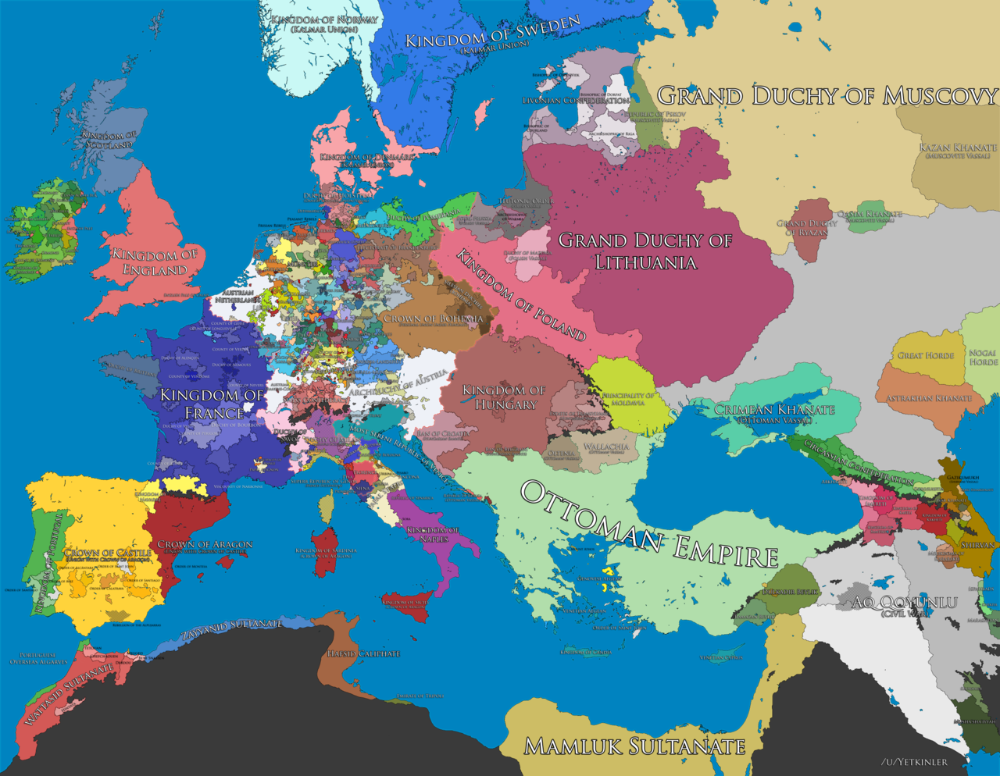
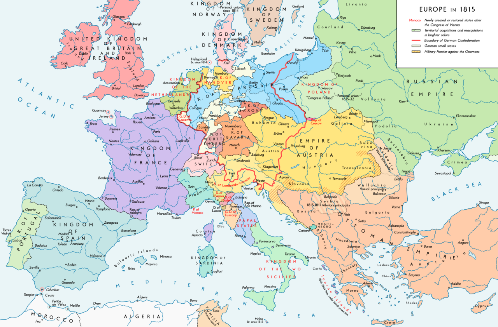
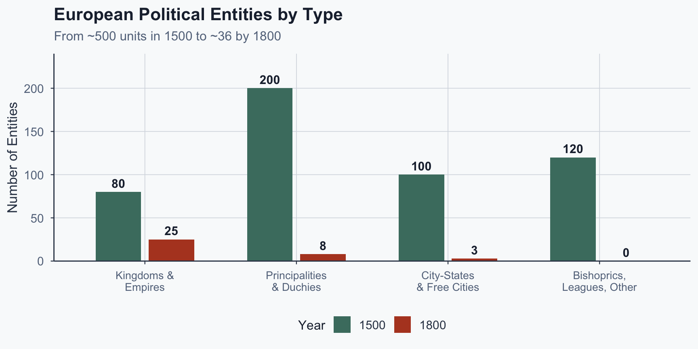
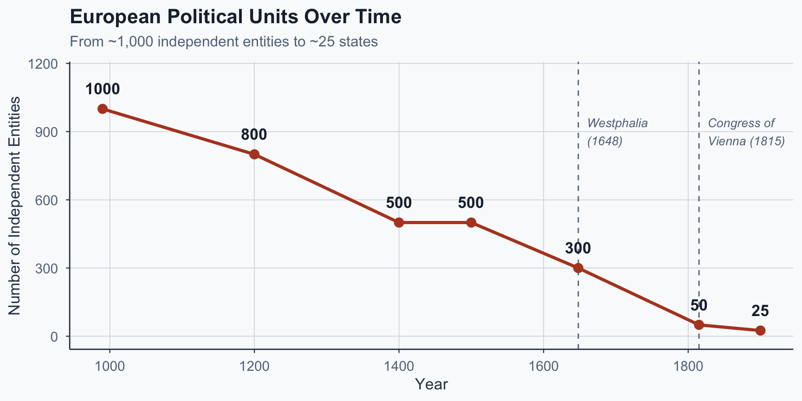
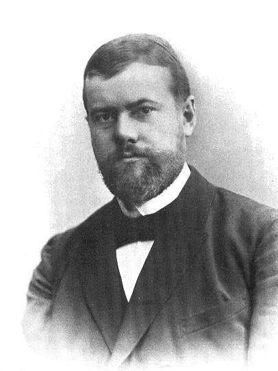
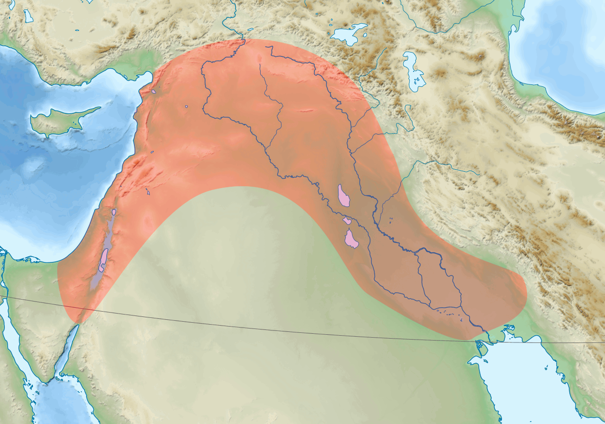
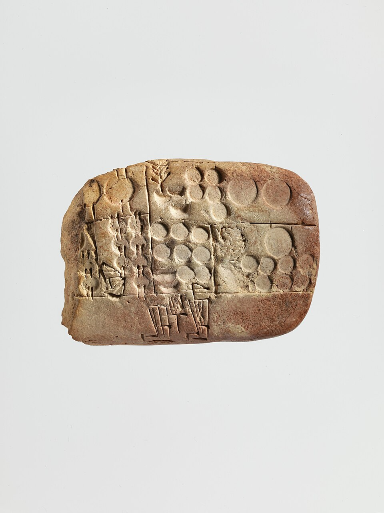
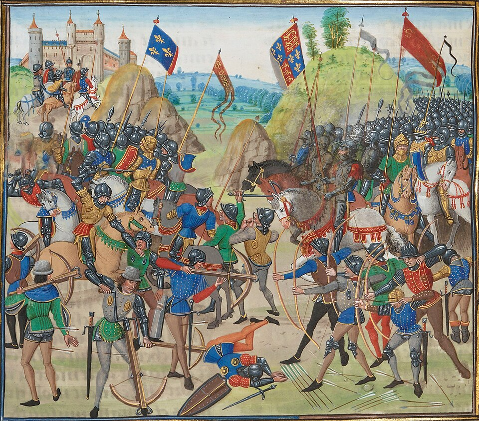
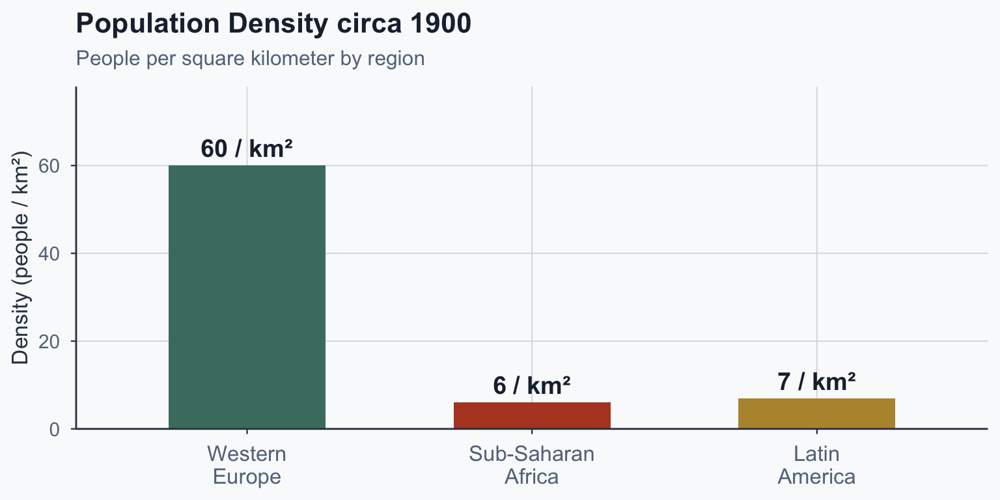
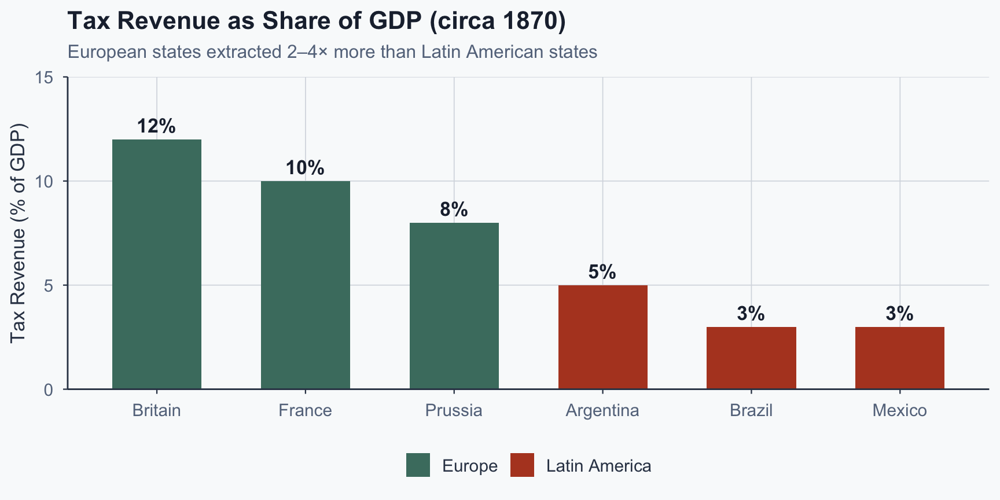

![]()
%%{init: {'theme': 'base', 'themeVariables': {'fontSize': '20px', 'primaryColor': '#4a7c6f', 'primaryTextColor': '#f9fafb', 'primaryBorderColor': '#3a6e62', 'lineColor': '#b44527', 'edgeLabelBackground': '#f9fafb'}, 'flowchart': {'useMaxWidth': true, 'nodeSpacing': 50, 'rankSpacing': 70}}}%%
flowchart LR
A["Military<br/>Competition"] --> B["Revenue<br/>Imperative"]
B --> C["Extraction<br/>& Taxation"]
C --> D["Administrative<br/>Apparatus"]
D --> E["State<br/>Capacity"]
E -->|"Stronger<br/>armies"| A
Comparative Politics
Lecture 2: State Formation and State Building
The Puzzle
What Happened to Europe?


Sources: Yetkinler / Wikimedia Commons (CC BY-SA 4.0); Wikimedia Commons (public domain).
From hundreds of independent political units to a handful of consolidated states.
Which types survive — big ones? Rich ones? Warlike ones?
Europe circa 1500
A patchwork of hundreds of competing political units:
- ~200 principalities and duchies
- ~100 city-states and free cities
- ~80 kingdoms and large polities
- ~100+ bishoprics, leagues, and other forms
No single organizational form dominated. Political authority was fragmented, overlapping, and contested.
Before and After: What Survived?

Figure 1: Source: Approximate figures from Tilly (1990).
The Scale of Consolidation

Figure 2: Source: Approximate figures from Tilly (1990).
Weber’s Definition of the State
“A human community that successfully claims the monopoly of the legitimate use of physical force within a given territory.”
— Max Weber (1919, p. 78)
Three elements of what survived:
- Monopoly: force is not shared
- Legitimate: accepted, not merely imposed
- Territory: bounded space, not kinship

So What?
We know what survived — territorial states with force monopolies.
But what produced them?
We need a theory that explains the maps.
The Agricultural Precondition
Agriculture Creates Taxable Populations
Before agriculture: mobile forager bands (20–150 people)
The Neolithic revolution (~10,000 BCE) changed everything:
- Sedentary settlement tied people to land
- Grain surplus was storable and visible
- Populations became dense, fixed, and countable

Agriculture Creates Taxable Populations
Before agriculture: mobile forager bands (20–150 people)
Scott (2017): grain is uniquely taxable — harvested seasonally, must be stored, can be confiscated and transported.
Agriculture created the preconditions for the state: captive, taxable populations.
Case Evidence: Why Grain = State Power
1. Why did states emerge after the Neolithic revolution?
2. Why are cereals easier to appropriate than roots and tubers?
3. Why does cereal cultivation simultaneously create both the demand for a state and the means to finance it?
From Surplus to Tilly’s Model
The agricultural causal chain:
- Agriculture → sedentary, dense populations
- Grain surplus → storable, visible, taxable
- Predation risk → demand for protection (Boix, 2015)
- State emerges → Tilly’s war-extraction cycle begins

Tilly’s Theory
“War Made the State”
Charles Tilly (1985, 1990) offers the strongest explanation:
- Not design: nobody planned the modern state
- Not ideology: no shared vision drove consolidation
- Selection: centuries of military competition
The survivors out-extracted and out-administered the rest.
The Causal Chain
Source: Author’s diagram based on Tilly (1990).
Step 1: Military Competition
Hundreds of political units competing for survival
- War was constant in early modern Europe
- Major powers at war over 75% of the time, 1500–1700 (Tilly, 1990)
- Survival required military capability
If you couldn’t field an army, you were absorbed by someone who could.

Step 2: The Revenue Imperative
Armies require money — and money requires extraction
- Mercenaries, gunpowder, fortifications, navies
- Costs escalated continuously after the 14th century
- Rulers who couldn’t pay couldn’t fight
War didn’t just require soldiers. It required fiscal systems.
Step 3: Extraction and Selection
You cannot tax what you cannot count
- Censuses, cadastres, customs houses
- Tax collectors, courts, enforcement mechanisms
- Each layer added bureaucratic capacity
This was not progress — it was elimination. Units that extracted effectively survived; the rest were conquered or absorbed.
The modern state is what’s left standing after everything else was destroyed.
The Coercion-Capital Framework
Not all survivors look the same. Outcomes depended on the local balance of coercion and capital (Tilly, 1990).
| Low Capital | High Capital | |
|---|---|---|
| High Coercion | Tributary empires (Russia, Ottomans): governed through intermediaries, not bureaucracy | National states (France, England): combined urban wealth with military force |
| Low Coercion | Fragmented zones | City-states (Venice, Genoa): commercially wealthy but militarily fragile |
National states dominated the 1800 map — the only form that combined enough capital to tax and enough coercion to enforce.
So What?
Tilly’s theory is powerful: one mechanism explains enormous variation across five centuries.
But it was built on one continent.
What happens when we test it elsewhere?
Africa: Herbst’s Challenge
Africa Had Wars — But Not States
If war makes states, Africa should have developed centralized states.
- Warfare was widespread across the continent
- Yet most polities had overlapping, negotiated sovereignty
- No Weberian monopoly on force emerged
What went wrong with Tilly’s prediction?
Herbst’s Answer: Geography and Demography
Jeffrey Herbst (2000) argues the causal chain broke early:
- Low population density across vast territories
- Difficult terrain: rainforest, desert, savanna
- No road infrastructure for systematic control
The fundamental problem: rulers couldn’t reach their populations.
Population Density: The Core Difference

Figure 3: Source: Approximate figures from McEvedy & Jones (1978).
The Exit Option
When populations are sparse and mobile, subjects can leave rather than pay.
%%{init: {'theme': 'base', 'themeVariables': {'fontSize': '20px', 'primaryColor': '#4a7c6f', 'primaryTextColor': '#f9fafb', 'primaryBorderColor': '#3a6e62', 'lineColor': '#334155', 'edgeLabelBackground': '#f9fafb'}, 'flowchart': {'useMaxWidth': true, 'nodeSpacing': 50, 'rankSpacing': 60}}}%%
flowchart LR
A["Military<br/>Competition"] --> B["Revenue<br/>Imperative"]
B --> C["Attempt<br/>Extraction"]
C -->|"Subjects flee"| D["Population<br/>Exit"]
D -->|"No tax base"| E["No<br/>Bureaucracy"]
E --> F["Weak<br/>State"]
style D fill:#b44527,color:#f9fafb,stroke:#8c3520
style E fill:#b44527,color:#f9fafb,stroke:#8c3520
style F fill:#b44527,color:#f9fafb,stroke:#8c3520
Source: Author’s diagram based on Herbst (2000).
What Is a Scope Condition?
If your subjects can walk away instead of paying taxes, what happens to your ability to build a state?
Tilly’s theory contains a hidden assumption: populations are captive and taxable.
- In Europe, this assumption held
- In precolonial Africa, it did not
A scope condition is an unstated assumption that determines where a theory applies.
Exercise 1: Trace the Chain Backwards
Starting from “no state capacity,” work backwards through Tilly’s causal chain.
At which link does the chain break in Africa, and why?
- No bureaucracy because…
- No extraction because…
- No captive tax base because…
So What?
Africa shows us that Tilly isn’t wrong — he’s incomplete.
The theory needs a condition it didn’t originally state: populations must be captive.
But what about a place where populations are captive, wars do happen, and states still don’t consolidate?
Latin America: Centeno’s Challenge
A Harder Puzzle
Latin America in the 19th century:
- Wars were common — interstate and civil
- Populations were settled — not Herbst’s problem
- Tilly predicts: war should build state capacity
What actually happened: war produced weak states.
Why?
What Went Wrong?
Centeno (1997, 2002) identifies three failures:
- No preexisting bureaucratic infrastructure
- Colonial administration was extractive, not developmental
- Elite resistance to taxation
- Landed oligarchs blocked fiscal reforms
- Wars without mass mobilization
- Small armies, foreign loans, no fiscal bargain
Fiscal Extraction: Europe vs. Latin America

Figure 4: Source: Approximate figures from Centeno (1997) and Dincecco (2009).
What Is a Mechanism Failure?
The theory’s logic is sound — but one of the links doesn’t connect.
In Latin America, the link between war and extraction is broken:
- Elites opt out of the fiscal bargain
- Wars funded by debt, not taxes
- No mass mobilization, no social contract
A mechanism failure occurs when the causal pathway exists in theory but is blocked by local conditions.
Two Different Broken Links
| Africa (Herbst) | Latin America (Centeno) | |
|---|---|---|
| Where it breaks | Extraction → Bureaucracy | War → Extraction |
| Why it breaks | Subjects can exit | Elites refuse to pay |
| Type of failure | Scope condition | Mechanism failure |
| Tilly is… | Incomplete | Correct but insufficient |
So What?
Two cases. Two different failures. Same theory.
Africa breaks the chain at the demand side — you can’t extract from people you can’t reach.
Latin America breaks it at the supply side — extraction fails when elites opt out.
Both teach us that war alone is not enough.
Synthesis
The Full Comparison
| Europe | Africa | Latin America | |
|---|---|---|---|
| Warfare | Persistent interstate | Present, fragmented | Present (19th c.) |
| Population | Dense, settled, captive | Sparse, mobile | Settled, captive |
| Extraction obstacle | None — bargain emerged | Can’t reach populations | Elites refuse the bargain |
| Outcome | Consolidated states | Fragmented sovereignty | Weak states |
The Single Takeaway
Important
State capacity emerges under sustained fiscal pressure when populations are taxable and cannot easily exit.
- War is the most important source of fiscal pressure
- But war is not sufficient on its own
You also need:
- Captive populations (lesson from Herbst)
- Social conditions permitting extraction (lesson from Centeno)
Revisiting Your Predictions
At the beginning, some of you predicted that warlike units survive.
Tilly agrees — but with two caveats you probably didn’t predict:
- War only builds states if populations can’t exit
- War only builds states if elites accept taxation
Good theory starts with a strong claim and then identifies where it breaks.
References
References I
Boix, C. (2015). Political order and inequality: Their foundations and their consequences for human welfare. Cambridge University Press.
Centeno, M. A. (1997). Blood and debt: War and taxation in nineteenth-century Latin America. American Journal of Sociology, 102(6), 1565–1605.
Centeno, M. A. (2002). Blood and debt: War and the nation-state in Latin America. Penn State University Press.
Dincecco, M. (2009). Fiscal centralization, limited government, and public revenues in Europe, 1650–1913. Journal of Economic History, 69(1), 48–103.
Herbst, J. (2000). States and power in Africa: Comparative lessons in authority and control. Princeton University Press.
Mazzuca, S. (2021). Latecomer state formation: Political geography and capacity failure in Latin America. Yale University Press.
References II
McEvedy, C., & Jones, R. (1978). Atlas of world population history. Penguin.
Scott, J. C. (2017). Against the grain: A deep history of the earliest states. Yale University Press.
Tilly, C. (1985). War making and state making as organized crime. In P. Evans, D. Rueschemeyer, & T. Skocpol (Eds.), Bringing the state back in (pp. 169–191). Cambridge University Press.
Tilly, C. (1990). Coercion, capital, and European states, AD 990–1990. Blackwell.
Weber, M. (1946). Politics as a vocation. In H. H. Gerth & C. W. Mills (Eds. & Trans.), From Max Weber: Essays in sociology (pp. 77–128). Oxford University Press. (Original work published 1919)
Popescu (JCU) Comparative Politics Lecture 2: State Formation and State Building